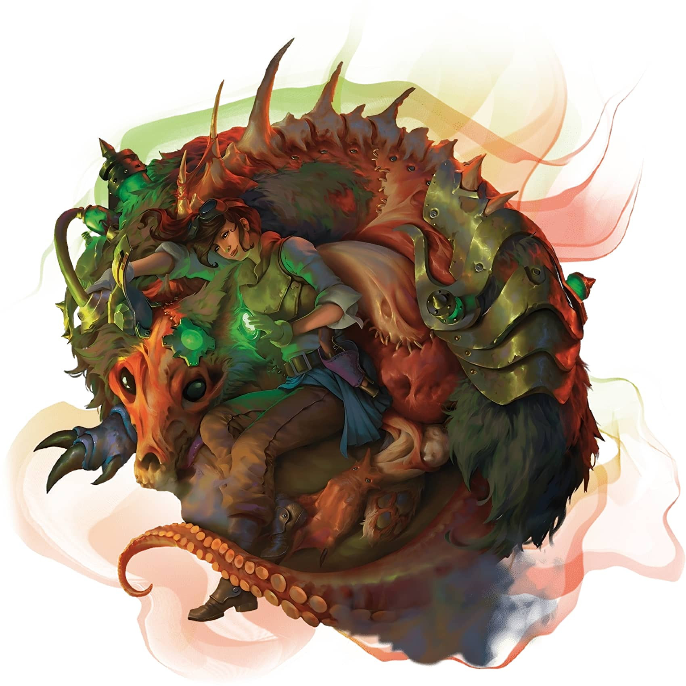

复生亡者，重组尸骸
苏生师无视自然法则，只为追求那些骇人听闻的实验。这些阴森的奇械师将来自不同尸体的残骸缝合成仆从，以污秽而禁忌的魔法强化生者，并将死灵术转化为一种令人战栗的科学。
3级：苏生师法术 Reanimator
Spells
当你到达苏生师法术表中特定的奇械师等级时，你就始终准备着表中对应的法术。
苏生师法术Reanimator Spells
| 奇械师等级 | 法术 |
|---|---|
| 3 | 维生术Spare the Dying 虚假生命False Life、巫术箭Witch Bolt |
| 5 | 目盲术/耳聋术Blindness/Deafness、强化属性Enhance Ability |
| 9 | 活化死尸Animate Dead、闪电束Lightning Bolt |
| 13 | 枯萎术Blight、防死结界Death Ward |
| 17 | 防活物护罩Antilife Shell、死者复活Raise Dead |
3级：苏生师技艺 Reanimator's Skill
Set
你获得以下增益。
电颤复律Jolt to
Life。你施展维生术Spare the
Dying
时，可以修改此法术使其向目标发射一阵电流，令其回生。目标恢复等于你奇械师等级的生命值，且位于源自其10尺光环区域内的每名你选择的生物必须进行一次对抗你法术豁免DC的敏捷豁免，豁免失败则受到2d4闪电伤害，豁免成功则受到一半伤害。
你能够以此法修改法术的次数等于你的智力调整值。你在完成长休时重获所有已消耗的使用次数。此特性的闪电伤害在你的奇械师等级达到11级（3d4）和17级（4d4）时提高1d4。
苏生师工具Reanimator's
Tools。
你获得炼金工具的熟练。若你已经拥有其熟练，则你获得另一种你选择的工匠工具的熟练。
3级：苏生伴兵 Reanimated
Companion
你能够以一个魔法动作，使用修补工具或你具有熟练的其他种类的工匠工具，通过亡灵法术与科学的力量创造一名苏生伴兵Reanimated
Companion
（数据卡见下）。伴兵显现于你5尺的未占据空间中。伴兵的外观由你决定，但你的选择不会改变其游戏数据。
伴兵对你和你的盟友态度友善并服从于你。伴兵存在持续至你完成长休，或在你执行魔法动作令其解散时提前结束。此时伴兵无害地坍塌为一堆内脏。若你死亡，则伴兵立即降至0生命值并死亡（触发其自爆特质）。
一旦你创造了一名伴兵，你无法再次创造伴兵直至你完成长休或你消耗一个法术位来创造伴兵。你同时只能拥有一名伴兵，伴兵存在期间你无法创造伴兵。
战斗中的伴兵The Copanion in
Combat。
在战斗中，伴兵在你的回合内行动。其可以移动并自行执行反应，但除非你以附赠动作命令其执行动作，否则其唯一可用的动作是回避动作。若你陷入失能状态，则伴兵会自行行动且不再限制于回避动作。
苏生伴兵Reanimated Companion中型亡灵，中立
特质Traits
自爆Death Burst。伴兵在其死亡时爆炸。敏捷豁免检定：DC等于你的法术豁免DC，源自伴兵的10尺光环区域内的每名生物。失败：2d4暗蚀伤害。成功：半伤。 动作Actions恐怖横扫Dreadful Swipe。近战攻击检定：加值等于你的法术攻击加值，触及5尺。命中：1d4加你的智力调整值的暗蚀伤害，且目标无法执行借机攻击直至其下个回合开始。 |  | ||||||||||||||||||||||||||||||||||||||||||||||||||||||
5级：怪异改造 Strange
Modifications
每当你创造一名苏生伴兵时，你选择以下选项之一令其获得之。你在创造伴兵时进行选择。
魔导Arcana
Conduit。
你可以如同身处伴兵所在的空间一样施展法术，但你仍需使用你自己的感官。每回合一次，每当你施展一道塑能或死灵学派的奇械师法术并造成伤害时，若伴兵位于你120尺内，则你将你的智力调整值加入该法术的其中一枚伤害骰。
凶残Ferocity。伴兵恐怖横扫动作的伤害骰增加至1d6。
9级：强化苏生 Improved
Reanimation
你苏生伴兵的自爆伤害增加至4d4。你伴兵造成的暗蚀伤害无视抗性。
9级：骇惧改造 Macabre
Modifications
你尝试进一步改造你的伴兵。每当你创造一名苏生伴兵时，伴兵可以获得两个（而非一个）怪异改造选项。此外，你选择怪异改造选项时也可以从以下选项中选择。
肿胀Bloated。伴兵变为大型。每当其以恐怖横扫动作命中不超过大型的生物时，该生物被伴兵推离至多10尺。此外，你可以将你的智力调整值加入伴兵自爆造成的伤害。
枯瘦Gaunt。伴兵的速度提升至45尺，且其获得等于其速度的攀爬速度。伴兵可以在难以攀爬的表面上攀爬，包括沿着天花板移动，且无需为此进行属性检定。此外，每当一名你选择的生物在源自你伴兵的10尺光环区域内开始其回合时，该生物必须成功通过一次对抗你法术豁免DC的感知豁免，否则陷入恐慌状态直至其下个回合开始。
湿滑Moist。伴兵获得等于其速度的游泳速度，且其可以移动穿过最窄1寸宽的空间而无需额外消耗移动力。此外，每当伴兵被位于其10尺内生物的一次攻击检定命中时，攻击者受到等于你智力调整值的强酸伤害。
15级：精纯苏生 Refined
Reanimation
你已经彻底掌握了复活回生的科学技术，并获得下述增益。
便捷回生Facilitated
Revival。只要你使用修补工具或你具有熟练的其他种类的工匠工具作为施法法器，你便可以无需材料成分且无需法术位地施展一次死者复活Raise
Dead
。此特性一经使用，直到你完成长休都无法再次使用。
性命流转Life
Transfer。
你可以汲取你苏生伴兵体内的活化魔法以强化自身。当你或你的伴兵受到伤害时，你能够以反应恢复等于你伴兵当前生命值的生命值。伴兵随后立即降至0生命值并死亡（触发其自爆特质）。
卓越改造Superior
Modifications。
每当你创造苏生伴兵时，其现在可以获得三个怪异改造选项。